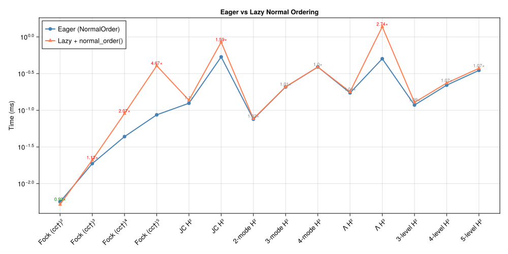

Ordering Conventions
SecondQuantizedAlgebra.jl supports two operator ordering conventions that control when commutation relations are applied: eager (at multiplication time) and lazy (deferred to an explicit call). This page explains the trade-offs and shows why eager ordering is the default.
Eager ordering (NormalOrder)
With NormalOrder (the default), every * call immediately applies commutation relations and returns a fully canonical QAdd:
h = FockSpace(:cavity)
@qnumbers a::Destroy(h)
a * a' # [a, a†] = 1 applied immediately → a†a + 1\[1 + a^{\dagger}a\]
This means expressions are always in canonical form — no intermediate un-ordered products exist. Subsequent operations (addition, further multiplication) work on already-simplified terms, so like terms are collected early and the expression stays compact.
What "canonical" means under NormalOrder
Three transformations fire eagerly during *, each producing a different aspect of the canonical form:
- Commutation swaps — Fock $[a, a^\dagger] = 1$, Spin $[S_j, S_k] = i\epsilon_{jkl}S_l$, PhaseSpace $[p, x] = -i$. Creation operators end up to the left of annihilation operators.
- Algebraic reductions — Transition composition $|i\rangle\langle j|\cdot|k\rangle\langle l| = \delta_{jk}|i\rangle\langle l|$ and the Pauli product rule $\sigma_j \sigma_k = \delta_{jk} I + i\epsilon_{jkl}\sigma_l$.
- Completeness for
NLevelSpaceground-state projectors — when a same-site composition would produce $|g\rangle\langle g|$ (the ground-state projector of anNLevelSpace), it is rewritten via the completeness relation\[|g\rangle\langle g| = 1 - \sum_{k \neq g}|k\rangle\langle k|\]
so that $|g\rangle\langle g|$ never appears in canonical-form dict keys.
The third point is what makes the basis $\{\sigma^{ij} : (i,j) \neq (g,g)\} \cup \{1\}$ linearly independent — without it, $\sum_j \sigma^{jj} = 1$ introduces an algebraic redundancy and physically equal expressions can have different dict keys (and so compare unequal under isequal). Each Transition carries ground_state and n_levels directly, so the eager arithmetic does this without consulting the Hilbert space.
ha = NLevelSpace(:atom, 2) # ground state = 1
σ12 = Transition(ha, :σ, 1, 2)
σ21 = Transition(ha, :σ, 2, 1)
σ12 * σ21 # composes to σ¹¹, then expanded: 1 - σ²²\[1 -{\sigma}^{{22}}\]
Lazy ordering (LazyOrder)
With LazyOrder, multiplication concatenates operators without applying any of the three eager transformations:
set_ordering!(LazyOrder())
expr = a * a' # stored as a·a† — no reordering\[aa^{\dagger}\]
The user controls each transformation explicitly:
| Want | Call |
|---|---|
| Reductions only (Pauli, Transition composition) — keep $\sigma^{gg}$ atomic | simplify(expr) |
| Reductions + commutation swaps — full normal ordering | normal_order(expr) |
| Either of the above + completeness — full canonical form | simplify(expr, h) or normal_order(expr, h) |
The Hilbert-space argument is the LazyOrder opt-in for completeness; under NormalOrder it is a no-op since the eager arithmetic already produced canonical form.
normal_order(expr) # now applies [a, a†] = 1 → a†a + 1\[1 + a^{\dagger}a\]
set_ordering!(NormalOrder()) # restore defaultWhy eager ordering is the default
In a lazy scheme, intermediate expressions can grow large because like terms are not collected until normal ordering is applied at the end. Consider computing $H^3$ for a Jaynes–Cummings Hamiltonian: each multiplication doubles or triples the number of terms, and without eager simplification the intermediate $H^2$ carries many redundant terms that cancel only after final ordering.
With eager ordering, commutation rules fire at each multiplication step. This collects like terms early, keeping intermediate results compact. The result: eager ordering is consistently faster for typical quantum optics workflows.
Benchmark results
The plot below compares eager vs lazy ordering across a range of systems, from simple Fock powers $(a a^\dagger)^n$ to multi-mode hopping Hamiltonians and lambda systems. Each benchmark measures the total time to construct and order the expression.

Key observations:
- Eager is faster in all cases, typically by 1.5–5×.
- The advantage grows with expression complexity: more terms means more opportunity for early cancellation.
- For simple cases (e.g. single Fock mode), the difference is small since there are few terms to collect.
The benchmark can be reproduced with:
julia --project=benchmark benchmark/eager_vs_lazy.jlWhen to use LazyOrder
Despite the performance advantage of eager ordering, LazyOrder can be useful when:
- You want to inspect un-ordered operator products before applying commutation rules.
- You want to keep ground-state projectors $|g\rangle\langle g|$ atomic for clarity (NormalOrder eagerly expands them).
- You are building expressions where the ordering convention should be chosen later.
- You need to apply
simplify(algebraic identities only) without commutation swaps.
Switch between conventions at any time:
set_ordering!(LazyOrder()) # disable eager ordering and completeness
set_ordering!(NormalOrder()) # restore canonical-form arithmetic (default)